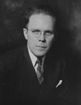

FORMER JUDGES
Judge William F. Dudine
William Dudine was born in Dubois County, Indiana in 1896. He taught school for five years
In Dubois County before serving in the united States Army during World War I. Upon
Returning from Europe, he enrolled in the law School of Catholic University in Washington,
DC. Following graduation, he began practicing law in Jasper 1922.
He served a term as prosecuting attorney for Dubois and Pike counties in 1932. He was
elected as a Democrat to the Indiana Appellate Court and served from January 1, 1933 to
January 1, 1941. He was Chief Judge for two of the Court’s terms- May 1935 and May 1938.
Following his tenure on the Appellate Court, he returned to Jasper, from 1954 to 1966,
he served as Circuit judge for Dubois and Martin counties.
Judge Dudine was a member of the American Legion and the knights of Columbus.
During a trip to visit relatives, he died St. Joseph Hospital in South Bend on
September 27, 1971.
In Dubois County before serving in the united States Army during World War I. Upon
Returning from Europe, he enrolled in the law School of Catholic University in Washington,
DC. Following graduation, he began practicing law in Jasper 1922.
He served a term as prosecuting attorney for Dubois and Pike counties in 1932. He was
elected as a Democrat to the Indiana Appellate Court and served from January 1, 1933 to
January 1, 1941. He was Chief Judge for two of the Court’s terms- May 1935 and May 1938.
Following his tenure on the Appellate Court, he returned to Jasper, from 1954 to 1966,
he served as Circuit judge for Dubois and Martin counties.
Judge Dudine was a member of the American Legion and the knights of Columbus.
During a trip to visit relatives, he died St. Joseph Hospital in South Bend on
September 27, 1971.
